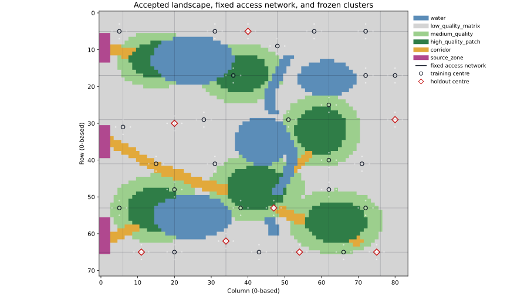
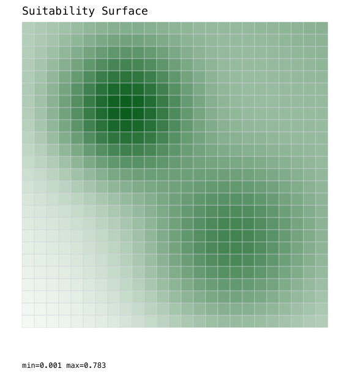
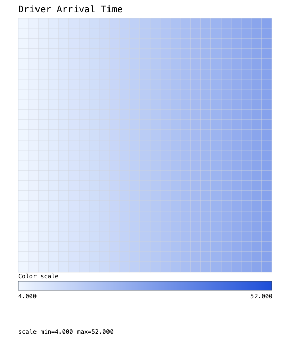
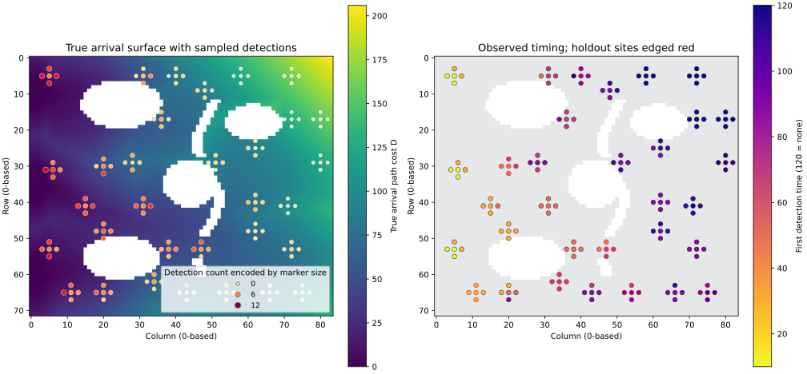
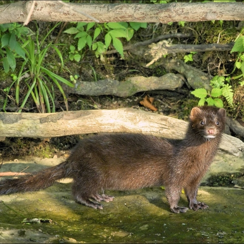

Discovery concept
Process, observation and inference sketched at a high level.
Team briefing | 13 August 2026
When can ecological process be recovered from imperfect spatial observations?
Synthetic methods → mink–water vole → Australian predator impacts
Barry W. Brook

Background | Why known-truth synthetic experiments
Process, observation and inference sketched at a high level.
Realism arrived before parameter truth or diagnostic control.
Synthetic control helped, but the wave was too simple.
A richer Python laboratory isolates one failure mode at a time.
The programme advanced through progressive diagnosis.
Known-truth reset | The first synthetic model


Current synthetic laboratory | Landscape and sampling
Current synthetic laboratory | Process and observation

Surveys ended at day 110 while the wave continued beyond day 200: observed spread reflects both the survey window and missed detections.
Predator spread | Recovery thresholds
Resistance is movement cost through passable habitat. Contrast η = 0 makes all passable habitat equal; η = 1 retains the full designed differences.
250 independent simulated surveys at each known contrast
Reliable detection required at least 95% of experiments to exclude uniform movement.
p = chance of detecting the predator on one survey after arrival; target interval width ≤ 0.20
Spread rate itself was accurately recovered at all three speeds.
Prey response | Recovery thresholds
Prey-effect multiplier = local prey-extirpation risk after predator arrival ÷ background risk; 1× means no predator effect.
Known arrival dates, perfect prey observation and 1,000 simulated experiments per effect
Fivefold effect recovered
Two visits per survey; detection probability 0.65
Fivefold effect still recovered
Recovered = calibrated uncertainty, adequate precision, better held-out prediction than a simple time-only model and ≥95% of experiments excluding no effect.
For the tested fivefold effect, imperfect prey detection and hidden predator-arrival dates caused only a modest loss of precision.
Inference | Calibrating uncertainty
Known generating values: spread rate 1.0 and fivefold prey-extirpation risk after arrival. Both were estimated from imperfect observations in 1,000 experiments.
Best-fitting values were centred on the values used to generate the data.
Separate intervals describe each parameter reliably; simultaneous coverage of both parameters remains a later question.
Variation among entire invasion waves inflated the shared uncertainty envelope; the prey-effect signal remained.
Current scientific position | What now works
Predator spread
Prey response
Scientific diagnosis
An end-to-end synthetic system now recovers multiple ecological processes under imperfect observation and identifies when information becomes limiting.
Research programme | Where the work leads
Known truth; identifiability thresholds; calibrated uncertainty; more than one landscape/model.
Great Britain as a constrained real-world test; islands retained as potential natural contrasts.

Cats and potentially foxes under sparse, difficult data; the grant-scale ecological endpoint.
The study systems become progressively more complex as our capacity to infer ecological processes from sparse data develops.
Discussion
Which result so far seems most scientifically important or surprising?
Does a synthetic-only first paper feel like a substantial contribution, and what evidence must it contain?
Which feature of the current ecology, landscape or sampling design feels least convincing?
What additional landscapes or models are essential before publication?
Which constraints from the mink–water vole and Australian systems should inform the design of the synthetic work now?